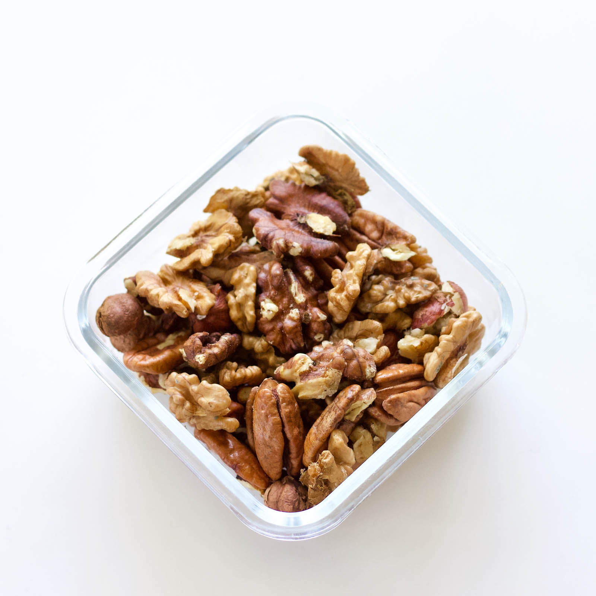

Granola
Granola is a simple snack thats easy to make and delicious for everyone. This recipe is one of my favorites. I actually make it for the restaurant that I currently work at. I could write more about the history of granola but personally I hate long introductions to recipes so lets get in to it.
Ingredients
- 4 cups Oats
- 1/2 cup Walnuts
- 1/2 cup Pecans
- 2 tsp Salt
- 1 tsp Cinnamon
- 1/2 cup Canola Oil
- 1/2 cup Maple Syrup
- 1 tsp Vanilla Extract
Directions
- Preheat oven to 275 degrees
- Roughly chop walnuts and pecans
- Mix all ingredients
- Put some parchment paper down on a sheet tray
- Either form your mixture into bars or just evenly coat the tray
- Bake for 15 to 20 minutes
The granola will still be a little soft when it comes out of the oven but will harden as it cools
- Remove from oven and allow to cool
- If making bars bag them and store for later. If making loose granola break up the tray into smaller pieces and store